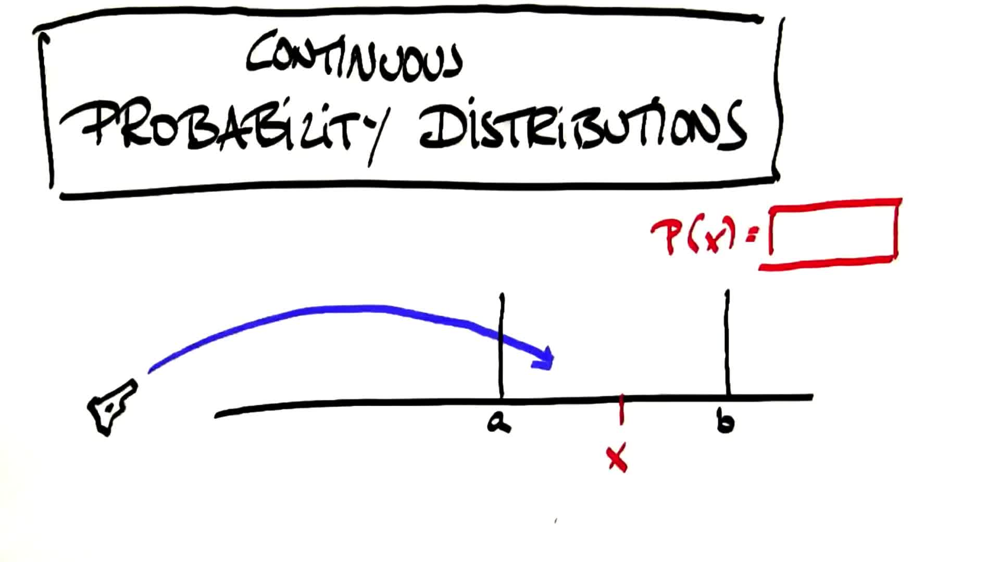

概率分布
Back to Home
01. 概率分布
02. 概率分布入门 1
03. 概率分布入门 2
04. 学习目标 - 贝叶斯法则
05. 学习目标 - 概率分布
06. 离散与连续变量
07. 离散概率分布
08. 离散概率 [练习]
09. 离散概率 [练习] 参考答案
10. 连续变量
11. 正确落点的概率
12. 旋转概率
13. 无处停止
14. 区间概率
15. 区间概率 2
16. 区间概率 3
17. 连续概率分布
18. 密度
19. 出生时间密度
20. 变更密度
21. 变更密度 2
22. 检查密度
23. 计算密度
24. 密度属性
25. 小结
Back to Home
11. 正确落点的概率
正确落点的概率
Question:
Start Quiz:

Solution:
Next Concept